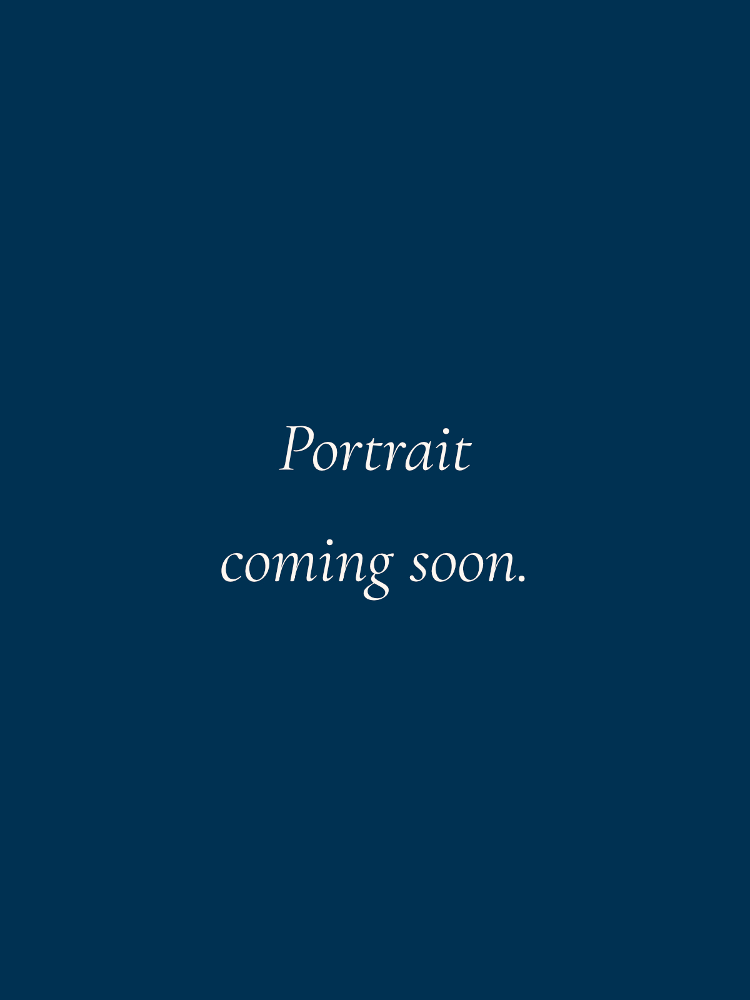

I support organisations and leaders in the planning and execution of high-level corporate, governmental and institutional events and protocol-sensitive engagements. My work is defined by precision, discretion and calm authority in politically, culturally and operationally complex environments.


ABOUT ME
Grown up near the North Sea, I found my professional home in Hamburg — connected to the North, yet open to new places, perspectives, and encounters. I value clarity, reliability, and thoughtful exchange with people who take responsibility and lead with conviction. I have more than ten years of experience in event management, with a clear focus on (international) protocol management since 2022. My career has taken me from operational roles to high-level corporate and governmental formats, including at Airbus, where I was responsible for VIP visits, delegation programmes, and protocol-sensitive engagements at the intersection of brand, security, discretion, and cultural precision. Several years spent working at sea, across nearly all major oceans, broadened my perspective. Operating in culturally diverse environments strengthened my openness, curiosity, and sensitivity to people and context — qualities that continue to shape my professional approach today. In demanding situations, I remain calm, structured, and decisive. Colleagues value my ability to provide stability under pressure and to keep focus on what truly matters. I work confidently in German and English at a professional level and am currently developing my French. In international settings, I place greater importance on linguistic awareness and cultural sensitivity than on formal completeness.
Services
I plan and lead complex corporate, governmental and institutional events for executive audiences. From strategic preparation and stakeholder alignment to on-site command, I ensure clear structures, reliable processes and seamless execution — including VIP programmes, stage and run-of-show control, supplier coordination and contingency planning under time pressure and public attention.
I provide protocol expertise for formal, bilateral and multilateral settings. This includes precedence, seating, flag protocol, ceremonial choreography and culturally appropriate hosting — always aligned with institutional expectations and diplomatic context.
As a Master of Ceremony and experienced event host, I support high-profile programmes with clarity, neutrality and confidence. My role is to maintain structure, timing and tone, while enabling respectful interaction between speakers, guests and institutions — in close coordination with programme, protocol and technical teams.
I support executives and delegations through preparation, accompaniment and coordination. My focus is on discretion, situational awareness and reliable guidance in sensitive environments where decisions, symbolism and timing matter.
Credentials
My experience spans international, political and corporate environments, including executive meetings, institutional ceremonies and high-stakes events. I regularly collaborate with organisations, agencies and leadership teams operating at the intersection of public visibility and strategic relevance.
Approach
- Briefing & Objectives — Clarifying goals, stakeholders, risks and expectations.
- Protocol & Structure — Designing the appropriate framework — procedurally, culturally and symbolically.
- Execution & On-Site Leadership — Operational command, real-time decision-making and calm coordination.
- Review & Continuity — Evaluation, documentation and preparation for future engagements.
Contact
If you are planning a high-level event or protocol-sensitive engagement, I am happy to discuss your requirements in confidence.
Get in Touch Discreet handling of all inquiries.